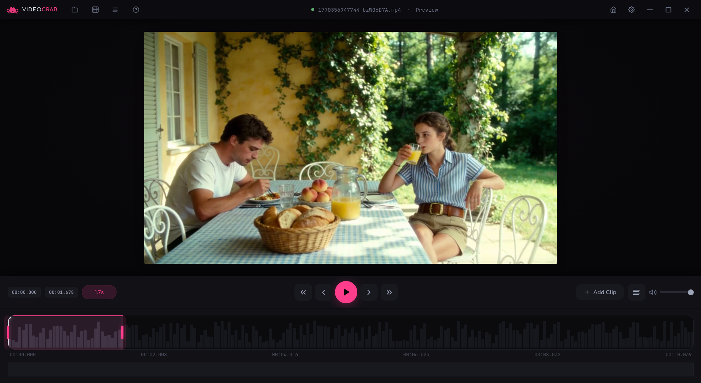
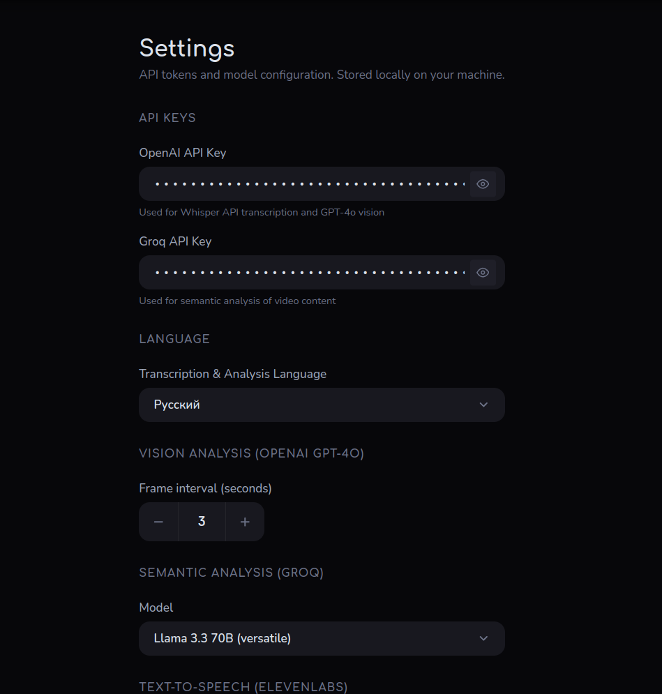
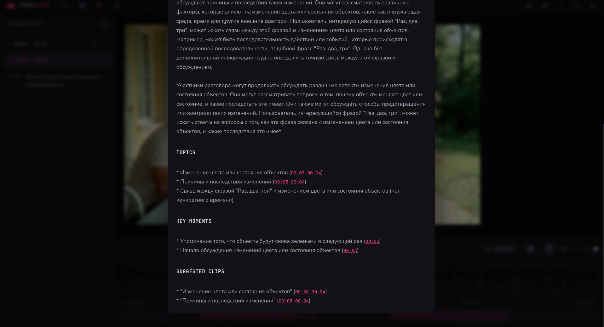
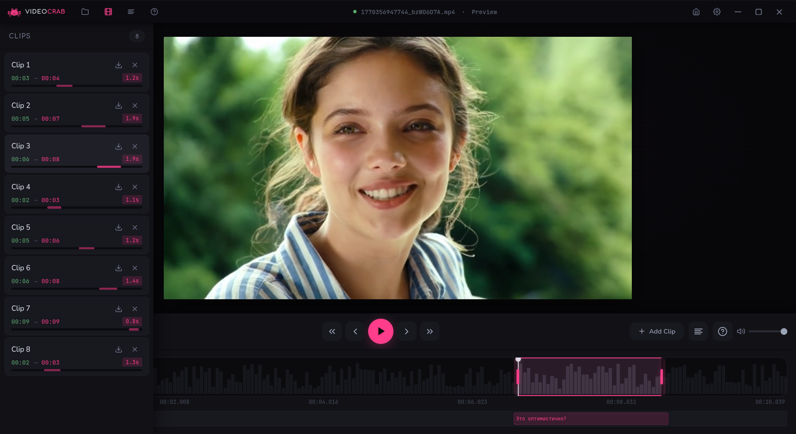
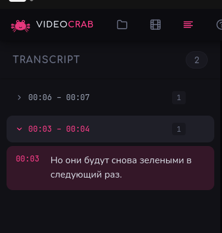
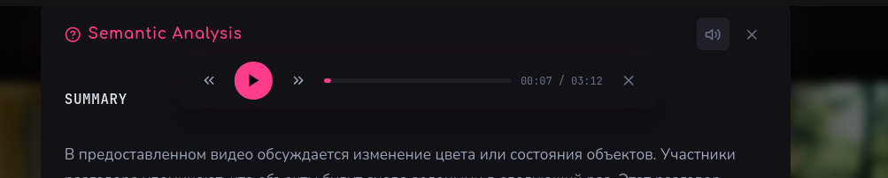

Drop a 2-hour video. Get a detailed breakdown of everything discussed — with timestamps, topics, and clips. Powered by AI.
Requires FFmpeg · Free & open source · MIT License
What it does
See it in action






How it works
The 3-stage analysis pipeline ensures accurate understanding of your content, even for multi-hour recordings.
AI reads the full transcript to understand participants, topic, and narrative arc.
10-minute chunks analyzed in parallel, each with full video context for accuracy.
Chunk analyses merged into one cohesive narrative with topics, moments, and clips.